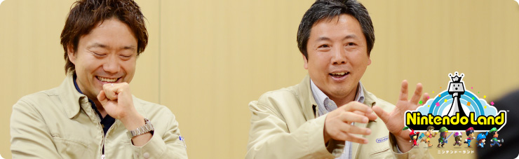
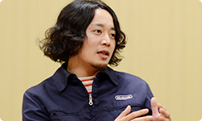
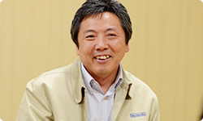
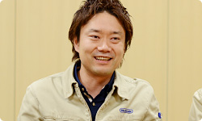

<div class="l-category-local-header">
<div class="category-local-header">
<div class="category-local-heading"><span>社長が訊く</span>
<div class="category-local-sub">IWATA ASKS


<div class="l-soft-topic-path is-block">
<div class="l-soft-topic-path-inner">
<div class="soft-topic-path">
<ul class="topic-path"><li class="topic-path-item"><span>『Wii U』 Nintendo Land篇</span></li></ul>


<div id="page-container">
<header class="interviewheader">
<h2 class="interviewheader__ttl"><span class="subtext">社長が訊く</span>『Wii U』</h2>

</header>
<div class="tabmenu-container">
<p class="tabmenu__ttl">シリーズ一覧
<ul class="tabmenu__body tabnum12">
<li class="tabmenu__item tab1">本体 篇</li>
<li class="tabmenu__item tab2">Wii U GamePad 篇</li>
<li class="tabmenu__item tab3">Miiverse プロデュース 篇</li>
<li class="tabmenu__item tab4">Miiverse 開発スタッフ 篇</li>
<li class="tabmenu__item tab5">インターネットブラウザー 篇</li>
<li class="tabmenu__item tab6">Wii U Chat 篇</li>
<li class="tabmenu__item tab7">New スーパーマリオブラザーズ U 篇</li>
<li class="tabmenu__item tab8">ZombiU（ゾンビU） 篇</li>
<li class="tabmenu__item tab9">Nintendo×JOYSOUND Wii カラオケ U 篇</li>
<li class="tabmenu__item tab10">Nintendo Land 篇</li>
<li class="tabmenu__item tab11">Nintendo TVii 篇</li>
<li class="tabmenu__item tab12">Wii Street U powered by Google 篇</li>
</ul>

<div class="hero-container">
<div class="hero__img">

<div class="interviewsubheader">
<div class="interviewsubheader__ttl"><h2>Nintendo Land篇</h2>

<div class="pageindex-container">
<p class="pageindex__ttl">目次
<ul class="pageindex__body">
<li class="pageindex__item">1. 開発はWii Uとほぼ同時にはじまった</li>
<li class="pageindex__item active">2. 機能からのデザイン</li>
<li class="pageindex__item">3. クリアしてからが「本番」</li>
<li class="pageindex__item">4. 「チームスポーツのように」</li>
<li class="pageindex__item">5. 「生きている人がいる」</li>
</ul>

<div class="interview-container">
<h3 class="interview__ttl">2. 機能からのデザイン</h3>

岩田
: 「任天堂のテーマパークにしよう」となって、<br>その世界を具体的にデザインする話は、<br>いつごろ阪口さんに行ったんですか？


阪口
: 僕が入るころには<br>試作がある程度そろった状態で、<br>「バラバラの積み木をどんな箱にはめようか？」<br>という話から、考えはじめた記憶があります。




江口
: 『Nintendo Land』っていう名前が<br>正式に決まったのはずっと後ですけど、<br>「任天堂のテーマパーク」ってテーマだけは、<br>その当時から決まっていました。


山下
: ただ、それぞれのアトラクションを<br>「こぢんまりとした感じにはしたくない」<br>という気持ちが強かったんです。


阪口
: 各々のゲームをきれいにまとめるより、<br>「それぞれの個性をはっきり尖（とが）らせたほうが、<br>　よりテーマパークのアトラクションっぽくなる」<br>という方向で、イメージを膨らませていきました。


岩田
: たしかに「リゾートスポーツ」だと統一感が求められますが、<br>「テーマパークのアトラクション」なら、<br>世界観が違うほど、ゲームの個性が際立ちますね。<br>一見バラバラな素材をひとつにまとめるうえで、<br>「テーマパーク」というのは相性がよかったんですね。


山下
: ゲームの絵づくりも、<br>全部バラバラにつくっています。


阪口
: そうでしたね（笑）。<br>たとえば２Ｄっぽい画面にしたり、<br>俯瞰（ふかん）で映したり、画面を分割したり・・・<br>各々のゲームの個性が映える見せかたを工夫しました。<br>あと『Nintendo Land』の個性として<br>ひとつ挙げられるのが、<br>各アトラクションに挑む前に、<br>Miiが着ぐるみに「変身」するシーンがあるんです。


岩田
: 

<span>マリオだったり、リンクだったり、<br>各アトラクションにふさわしい姿に、<br>Miiが着替える</span>んですよね。


阪口
: はい。この変身シーンを見せることで、<br>「ここでは、このキャラクターに扮して遊びます」<br>ということがまず強調されるので、<br>デザインする側としても、<br>各ゲームの個性を思い切り伸ばせました。


岩田
: 「アトラクションが違えば、バラバラで当たり前」<br>ということを、変身シーンを通して見てもらうことで<br>地続きにしているわけですね。


山下
: 
各ゲームによって遊ぶ視点もバラバラなので、<br>そこはこだわりました。<br>また一方で、プレイ中のMiiが<br>見えないゲームもあります。<br>たとえば「<span>鷹丸の手裏剣道場</span>」は<br>カメラのこっち側に自分がいるので、<br>一切、Miiが出てきません。


岩田
: 「ゲームをする自分は、どこにいった？」<br>そんな状態ですね（笑）。


山下
: はい。さらに、<br>「

<span>ドンキーコングのクラッシュコース</span>」で<br>転がっていく三角形にいたっては、<br>もはやヒト型ですらありません（笑）。


阪口
: デザイナー的には<br>「これ、なんなんだ！？」って<br>いう気持ちもありましたけど（笑）、<br>遊ぶうえでは三角形がいちばん楽しかったので<br>試作のデザインをそのまま採用しました。<br>そんなふうに、ひとつずつ決着をつけながら、<br>「このゲームはこういうものなんだ」って、<br>思い切ったデザインを心がけていきました。


岩田
: とはいえ、Miiがマリオの着ぐるみになって、<br>「なんちゃってマリオ」に変身するということは、<br>「オリジナルをどこまでいじればいいか」という<br>別の難しさがありますよね？


阪口
: そうですね。<br>でも「どういう“なんちゃって”にしようか？」<br>ってこと自体を、楽しんでつくっていた感じでした。


山下
: たしかに「『Nintendo Land』なんでご勘弁を！」<br>って関係者に言えるから、<br>みんな自分の解釈で楽しそうに<br>オリジナルをいじっていましたね。<br>まあ、好きなようにやりすぎて、<br>江口さんに怒られたこともありましたけど（笑）。


江口
: だって、あの時は「どうぶつの森」じゃなくて、<br>「お菓子の森」になっていたからね！（笑）


岩田
: そういえば、<br>「

<span>どうぶつの森 キャンディーまつり</span>」で、<br>「キャンディーを食べたら頭が大きくなって、<br>　足が遅くなってしまう」という設定は、<br>どうやって決まったんですか？


阪口
: もともとプログラマーさんが<br>状態をわかりやすくするために<br>頭を大きくしてくれていたんですけど、<br>見た目が面白いし、ルールとしてもわかりやすかったので、<br>そのまま採用されました。


岩田
: え？ 状態を表示するために<br>試作でプログラマーの用意した仕様が、<br>そのまま採用されたんですか？


嶋村
: そうですね。


岩田
: 『どうぶつの森』の世界をつくった<br>江口さんからすると、どうなんでしょうか？（笑）


江口
: そう・・・ですね（笑）。ただあれは、<br>Miiがどうぶつのかぶりものをしていて、<br>頭の中にキャンディーをほうり込むことで<br>いっぱい入ってきたことがわかるから、<br>ゲームの機能がデザインで表現されているし、<br>オッケーです（笑）。




岩田
: ということは、宮本さんが<br>「プロペラマリオの動力は何だ？」（※10）<br>ということを追求するのと同様に、<br>江口さんは<br>「なぜ頭がでかくなるかというと、<br>　キャンディーがいっぱい詰まっているから」<br>と解釈しているわけですね。

※10「プロペラマリオの動力は何だ？」＝プロペラマリオの動力に関するくわしい経緯、<span>社長が訊く『New スーパーマリオブラザーズ Wii』その１</span>はこちら。


江口
: そうです（笑）。


嶋村
: オリジナルのしばりからある程度、<br>解き放たれた世界をつくりましたけど、<br>みなさん、すごく大らかでした。<br>「遊びとして面白ければいい」<br>って許してくれて、すごく感謝しています。<br>まぁ多少、むちゃくちゃもやっていますけど・・・。


岩田
: それはたとえばどんな<br>「むちゃくちゃ」があるんですか？


阪口
: 「遊びの大事なところを活かす」ということで、<br>僕が「

<span>ピクミン アドベンチャー</span>」でやったのは、<br>敵の背中に丸い玉をつけて、<br>はっきり弱点がわかるようにしました。<br>本来なら、弱点は毛に隠れているとか、<br>もっとわかりにくいはずなんですけど、<br>このほうが圧倒的にわかりやすかったんです。


岩田
: 機能からデザインを突き詰めた結果なんですね。


山下
: はい。「ピクミン アドベンチャー」でも<br>今回は「自分がピクミンになれる」ということで、<br>ぜひ、「ピクミンは食べられる存在である」<br>ということに「フィーチャーしたい」と思って、<br>食べられたあとを想像してつくったんですけど・・・。


江口
: それ、オチを言わなきゃわからないよ？


山下
: その・・・食べられたピクミンが<br>「排泄」されるんです。すみません。<br>そこはオリジナルでは「絶対にやらないだろう」<br>と思ったので、頑張って入れました。<br>そしたら『スカイウォードソード』（※11）で、<br>鳥のフンが落ちてくるネタがあって、<br>それがすごくリアルでちょっとホッとした・・・という、<br>しょーもない話です。すみません。

※11『スカイウォードソード』＝『ゼルダの伝説 スカイウォードソード』。２０１１年１１月、Wii用ソフトとして発売されたアクションアドベンチャー。


一同
: （笑）


岩田
: 嶋村さんはどうですか？


嶋村
: わたしは「

<span>メトロイド ブラスト</span>」で、<br>かっこよくパワードスーツをつくっていたんです。<br>でも、自分のライフがわかりにくかったので、<br>ライフの数字をデカデカと、<br>「お鍋のフタみたいなものに書いて背負っている」<br>という設定にしました。<br>そしたら・・・サムスとは<br>似つかわしくない感じになってしまいました（笑）。




岩田
: でも「なんで数字を背負っているんだ！？」って、<br>最初は思いますけど、ダークな世界で<br>数字がぼーっと光っているから、<br>ちょっとかっこよく見えるんですよね（笑）。


嶋村
: はい。この表現が<br>いちばんわかりやすかったですし、<br>坂本（賀勇）さん（※12）が<br>「いいよ」って言ってくださったので、<br>ホッとしました（笑）。

※12坂本賀勇＝企画開発本部企画開発部統括。『メイド イン ワリオ』シリーズをはじめ、『リズム天国』や『トモダチコレクション』、『METROID　Other M』などのプロデューサーを担当。過去、<span>社長が訊く Wiiプロジェクト Vol.6『おどる メイド イン ワリオ』編</span>、<span>社長が訊く『METROID　Other M』コラボレーション 篇</span>、<span>社長が訊く 坂口博信×坂本賀勇</span>、<span>社長が訊く『キキトリック』</span>に登場。


岩田
: まさに「機能からのデザイン」を追求していますね。<br>ところで『Nintendo Land』を特徴づける<br>
<span>看板に顔がついたキャラクター</span>は、<br>どうやって生まれたんですか？


阪口
: キャラクターのキッカケは「音声合成」です。<br>テレビと手元のWii U GamePadという<br>ふたつのスピーカーがあるというのは、<br>いままでにない構造なので、ぜひ使いたかったんです。


岩田
: たとえば手元のWii U GamePadの画面から<br>「こっちだよ」とテレビ画面に視線を誘導する、<br>なんてこともできますね。


阪口
: はい。
<span>キャラクターが音声合成で<br>ナビゲートする</span>かたちにしたくて、<br>モニターの形状にすればいろいろ表示できるし、<br>３本指があればスリーカウントできるし、<br>ということで「モニータ」が生まれました。


岩田
: これも機能を突き詰めて<br>生まれたキャラクターですね。<br>「モニター」だから「モニータ」ですね（笑）。


山下
: 一応、「看板娘」というダジャレで、<br>女の子の設定です（笑）。


<li class="pagination-prev"><span>1. 開発はWii Uとほぼ同時にはじまった</span></li>
<li class="pagination-next"><span>3. クリアしてからが「本番」</span></li>
</ul>
<div class="listbtn-container">
<p class="listbtn__item">社長が訊く 一覧

